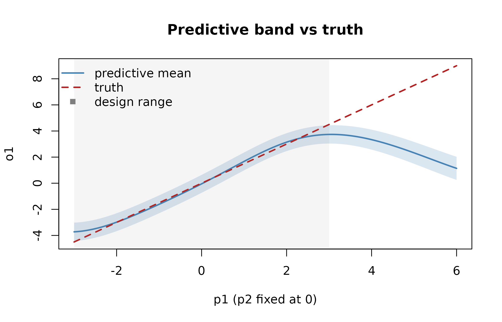
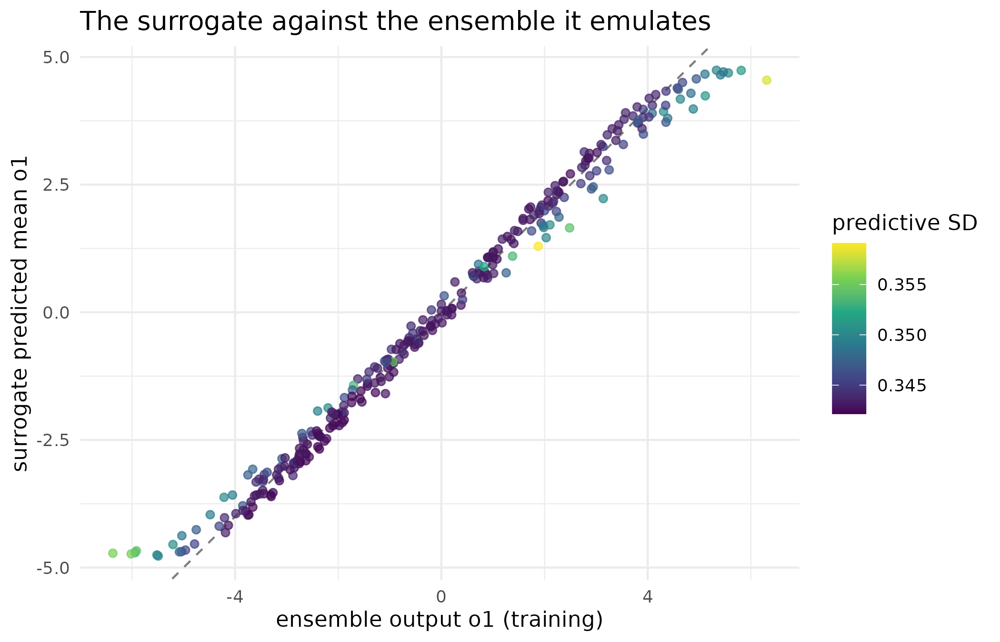
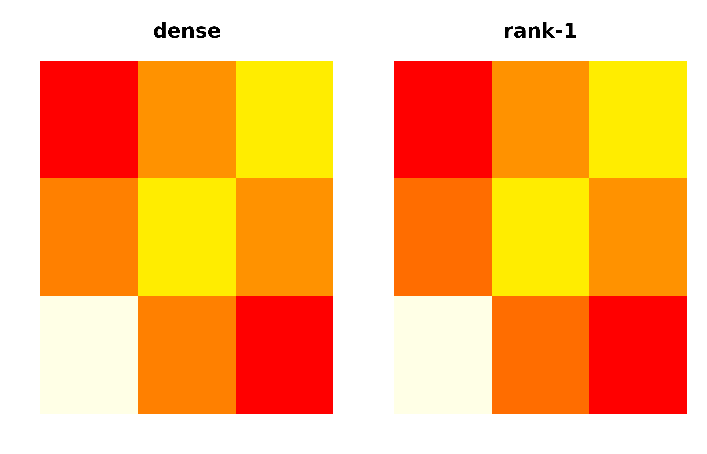
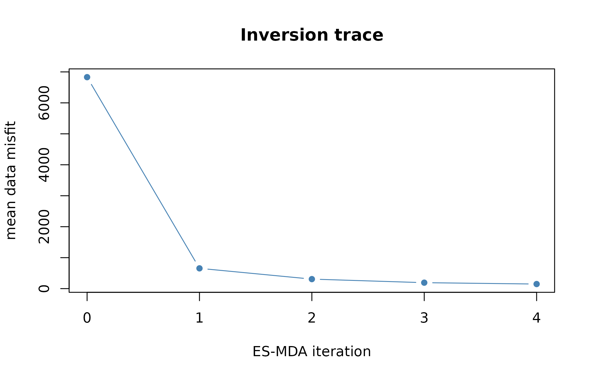

Distribution-preserving surrogates: emulate, invert, check
Source:vignettes/surrogate-workflow.Rmd
surrogate-workflow.RmdWhy
Does the fast stand-in I trained for my simulator actually preserve the simulator’s predictive distribution, not just its mean, and would I be able to tell if it did not? That is the question anyone plugging a surrogate into a mechanism lens has to answer before trusting it, and it is what this vignette exists to answer: a surrogate (or emulator) that reports a predictive distribution, not a point, walked through the whole loop – ingest, fit, read, invert, check – so the distribution can be inspected and falsified rather than assumed. The reference surrogate ships with quorum itself and needs no other package, so every code chunk below runs as shown; one chunk needs kernR and is guarded accordingly.
What
fb_ensemble() carries a simulation ensemble (contract
C5) – a design matrix paired with the simulator’s row-aligned response,
from whatever producer built it. fit_surrogate() trains a
fast, distribution-preserving stand-in for the simulator (contract C7):
its predict() method returns a mean and a standard
deviation for every output, so a downstream step never has to treat the
surrogate as exact. fb_surrogate_ies() is the calibration
consumer – an Ensemble Smoother with Multiple Data Assimilation that
inverts observed data against the surrogate in place of the simulator.
fb_surrogate_ppc() is the predictive check – a
maximum-mean-discrepancy test, run through kernR, of whether the
surrogate’s own predictive draws are distinguishable from the true
simulator’s outputs. fb_cov_slice() reads one row’s
cross-output covariance out of a joint prediction.
Do
A simulator we can check against
We use a linear forward model y = G theta so the truth
is known and the inversion is exact in expectation. Three outputs, two
parameters, and a little observation noise.
g <- rbind(c(1.5, -0.8), c(0.4, 1.1), c(-0.9, 0.6)) # 3 outputs x 2 params
n_train <- 300L
theta <- cbind(
p1 = runif(n_train, -3, 3),
p2 = runif(n_train, -3, 3)
)
y <- theta %*% t(g) + matrix(rnorm(n_train * 3L, 0, 0.1), n_train, 3L)
colnames(y) <- c("o1", "o2", "o3")The ensemble is ingested through the C5 contract, so any conforming
producer (a PESTO manifest, a raw apsimx run, a saved file)
feeds a surrogate the same way. Here we build one directly from the
design and the outputs.
ens <- fb_ensemble(
params = as.data.frame(theta),
outputs = as.data.frame(y),
provenance = list(source = "raw")
)
ens
#> -- fb_ensemble (simulation ensemble, contract C5) ----------
#> source : raw
#> sets : 300
#> params : 2 (p1, p2)
#> outputs: 3
#> labelled: FALSE | observed: FALSE
#> ------------------------------------------------------------Fit a surrogate and read its distribution
fit_surrogate() trains the emulator. The default
reference method, "rff", is a random-Fourier-features
Bayesian linear model whose predictive variance is set by evidence
maximisation, so the reported standard deviation is calibrated rather
than an arbitrary ridge.
sur <- fit_surrogate(ens)
sur
#> -- fb_surrogate (distribution-preserving emulator, C7) -----
#> method : rff | train sets: 300
#> params : 2 (p1, p2)
#> outputs: 3 (o1, o2, o3)
#> rff fit: joint (cross-output covariance) | ARD
#> predict(): per-output <name>_mean + <name>_sd (cov = TRUE for joint)
#> ------------------------------------------------------------predict() returns, for each emulated output
<o>, a <o>_mean and a
<o>_sd column. The standard deviation is the
distribution-preserving part of the contract.
newdata <- data.frame(p1 = c(1.0, -2.0), p2 = c(0.5, 1.5))
pred_new <- predict(sur, newdata)| o1_mean | o1_sd | o2_mean | o2_sd | o3_mean | o3_sd |
|---|---|---|---|---|---|
| 1.266 | 0.343 | 0.942 | 0.235 | -0.712 | 0.229 |
| -4.137 | 0.344 | 0.936 | 0.236 | 2.640 | 0.229 |
p1_sweep <- seq(-3, 6, length.out = 200L)
sweep_df <- data.frame(p1 = p1_sweep, p2 = 0)
pred_sweep <- predict(sur, sweep_df)
truth_sweep <- g[1L, 1L] * p1_sweep + g[1L, 2L] * 0
plot(p1_sweep, pred_sweep$o1_mean, type = "l", lwd = 2, col = "steelblue",
ylim = range(c(pred_sweep$o1_mean + 2 * pred_sweep$o1_sd,
pred_sweep$o1_mean - 2 * pred_sweep$o1_sd, truth_sweep)),
xlab = "p1 (p2 fixed at 0)", ylab = "o1", main = "Predictive band vs truth")
polygon(c(p1_sweep, rev(p1_sweep)),
c(pred_sweep$o1_mean + 2 * pred_sweep$o1_sd,
rev(pred_sweep$o1_mean - 2 * pred_sweep$o1_sd)),
col = grDevices::adjustcolor("steelblue", alpha.f = 0.2), border = NA)
lines(p1_sweep, truth_sweep, lty = 2, col = "firebrick", lwd = 2)
rect(-3, par("usr")[3], 3, par("usr")[4],
col = grDevices::adjustcolor("grey50", alpha.f = 0.08), border = NA)
legend("topleft", c("predictive mean", "truth", "design range"),
col = c("steelblue", "firebrick", "grey50"), lty = c(1, 2, NA),
pch = c(NA, NA, 15), lwd = c(2, 2, NA), bty = "n")
Predictive mean (line) and +/- 2 standard-deviation band (ribbon) for output o1 as p1 sweeps from -3 to 6 at p2 = 0, against the true linear response (dashed); the design only covers p1 in [-3, 3] (shaded), so the region to the right of it is genuinely out-of-design.
Inside the shaded design range the band hugs the truth and stays
tight; once p1 moves past 3 the mean starts to bend away
from the true straight line and the band widens accordingly – the
reference surrogate is genuinely less certain where it has never seen
data, which is the behaviour clause 2 of the C7 contract exists to
require of every registered conformer.
pred_train <- predict(sur, as.data.frame(theta))
fit_df <- data.frame(
observed = y[, "o1"], predicted = pred_train$o1_mean, sd = pred_train$o1_sd
)
ggplot2::ggplot(
fit_df, ggplot2::aes(x = observed, y = predicted, colour = sd)
) +
ggplot2::geom_abline(slope = 1, intercept = 0, colour = "grey50",
linetype = 2) +
ggplot2::geom_point(alpha = 0.7, size = 1.6) +
ggplot2::scale_colour_viridis_c(name = "predictive SD") +
ggplot2::labs(
x = "ensemble output o1 (training)", y = "surrogate predicted mean o1",
title = "The surrogate against the ensemble it emulates"
) +
ggplot2::theme_minimal()
The surrogate’s predicted mean against the ensemble’s own training outputs for o1, one point per training draw, coloured by the surrogate’s reported predictive SD at that point; the dashed line is exact recovery. A well-fitted surrogate on an easy, near-linear response like this one sits tight on the line with a narrow, roughly constant SD range.
By default the reference surrogate fits the outputs
jointly, so it preserves the cross-output predictive
covariance, not only the per-output marginals.
predict(..., cov = TRUE) returns that covariance as a
per-row array, and fb_cov_slice() reads one row’s
k-by-k slice.
pc <- predict(sur, newdata, cov = TRUE)
cov_slice_1 <- fb_cov_slice(pc, 1L)| o1 | o2 | o3 | |
|---|---|---|---|
| o1 | 0.118 | -0.001 | -0.066 |
| o2 | -0.001 | 0.055 | 0.005 |
| o3 | -0.066 | 0.005 | 0.052 |
cov_dense <- fb_cov_slice(pc, 1L)
sur_lr_fig <- fit_surrogate(ens, cov_rank = 1L)
pc_lr <- predict(sur_lr_fig, newdata, cov = "lowrank")
u <- pc_lr$cov_lowrank$u; d <- pc_lr$cov_lowrank$d; infl <- pc_lr$cov_lowrank$infl[1L]
cov_lr <- infl * (u %*% t(u) + diag(d))
zlim <- range(c(cov_dense, cov_lr))
op <- par(mfrow = c(1, 2), mar = c(2, 2, 3, 1))
image(cov_dense, main = "dense", axes = FALSE, zlim = zlim, col = heat.colors(20))
image(cov_lr, main = "rank-1", axes = FALSE, zlim = zlim, col = heat.colors(20))
Predictive cross-output covariance for row 1 of newdata (dense k x k slice, left) beside its rank-1 low-rank reconstruction (right); darker cells are larger covariance magnitude.
par(op)The rank-1 reconstruction reproduces the diagonal of the dense
covariance exactly (clause 5 of the C7 contract) and visibly recovers
the same off-diagonal pattern from a single latent factor, at
O(k) rather than O(k^2) storage – the picture
that makes the low-rank approximation’s fidelity, not just its numeric
closeness, inspectable. The diagonal of that slice equals the
<o>_sd values squared, exactly – the marginal
contract is never broken by the joint fit.
Invert: recover parameters from data
fb_surrogate_ies() is the calibration consumer. It runs
an Ensemble Smoother with Multiple Data Assimilation (ES-MDA), driving a
prior parameter ensemble toward agreement with observed data using only
the surrogate in place of the simulator. Because the surrogate is
distribution-preserving, its predictive variance is folded into the data
covariance, so emulator uncertainty inflates the assimilation noise
where the emulator is least sure.
theta_true <- c(p1 = 1.2, p2 = -0.7)
observed <- as.numeric(g %*% theta_true)
names(observed) <- c("o1", "o2", "o3")
prior <- data.frame(
p1 = rnorm(300, 0, 1.5),
p2 = rnorm(300, 0, 1.5)
)
fit <- fb_surrogate_ies(sur, observed, obs_sd = 0.05, prior = prior, seed = 7)
fit
#> -- fb_surrogate_ies (surrogate-accelerated ES-MDA, C7 consumer) -
#> surrogate: rff | iters: 4 | realisations: 300
#> data misfit: 6830 -> 147.7
#> parameter prior_mean posterior_mean
#> 1 p1 0.07365159 1.1578499
#> 2 p2 -0.10138003 -0.6978132
#> ----------------------------------------------------------------The posterior ensemble concentrates near the truth, and the data misfit falls from prior to posterior.
recovery_tab <- rbind(
truth = theta_true,
prior_mean = colMeans(prior),
posterior_mean = colMeans(fit$posterior)
)| p1 | p2 | |
|---|---|---|
| truth | 1.200 | -0.700 |
| prior_mean | 0.074 | -0.101 |
| posterior_mean | 1.158 | -0.698 |
plot(seq_along(fit$misfit) - 1L, fit$misfit, type = "b", pch = 16,
col = "steelblue", xlab = "ES-MDA iteration", ylab = "mean data misfit",
main = "Inversion trace")
Mean data misfit across the ES-MDA iterations, from the prior ensemble (iteration 0) to the final posterior.
The misfit falls monotonically from the prior to the final iteration, which is the diagnostic that the assimilation is actually pulling the ensemble toward agreement with the observed data rather than merely inflating its spread.
Check: did the surrogate distort the distribution?
A surrogate can recover the mean while getting the spread or
the cross-output correlation wrong.
fb_surrogate_ppc() tests the predictive distribution
itself, by drawing from the surrogate at held-out parameter sets and
comparing the draw cloud to the true simulator outputs with kernR’s
maximum-mean-discrepancy posterior-predictive check. The MMD test lives
in kernR – quorum only generates the predictive sample – so this chunk
runs only when kernR is installed.
set.seed(4)
held <- data.frame(p1 = runif(60, -2.5, 2.5), p2 = runif(60, -2.5, 2.5))
truth_held <- held$p1 %o% g[, 1] + held$p2 %o% g[, 2] +
matrix(rnorm(60 * 3L, 0, 0.1), 60, 3L)
colnames(truth_held) <- c("o1", "o2", "o3")
check <- fb_surrogate_ppc(
sur, held, as.data.frame(truth_held),
n_draws = 5L, seed = 1L, n_permutations = 199L
)
c(p_value = check$p_value, reject = check$reject)
#> p_value reject
#> 1 0A high p-value (no rejection) means the surrogate’s predictive draws are indistinguishable from the simulator’s outputs – the distribution was preserved, not merely the mean. The check is joint by default, so it exercises the cross-output correlation, not only each output’s spread.
Many outputs: a low-rank covariance
When a simulator has a large number of outputs whose covariance is
driven by a few latent factors, the dense
k-by-k covariance is wasteful.
cov_rank = q stores the cross-output covariance in a
rank-q factor-analysis form, reducing the storage from
order k squared to order k times
q, while reproducing the covariance diagonal – and hence
every <o>_sd – exactly.
sur_lr <- fit_surrogate(ens, cov_rank = 1L)
sur_lr$fit$sigma_lr$rank
#> [1] 1Both consumers use the factored form natively, so the dense
covariance is never formed: fb_surrogate_ies() folds it
into the Kalman update through the Woodbury identity, and
fb_surrogate_ppc() samples it factored (and, with
project = TRUE, runs the discrepancy test in the
q-dimensional factor space, which is cheaper and
higher-powered on the correlated structure for a large output count).
The factor itself is fitted by one of three methods: an eigen-truncation
(the default), a factor-analysis EM (cov_method = "fa",
more faithful when the residual noise is uneven across outputs), or
"auto" (picks between them by the heteroscedasticity of the
eigen-residual diagonal).
Read
The training-fit figure above recovers the ensemble’s own outputs
with correlation 0.994 and every predictive SD in a narrow band, which
is what a near-linear response fitted well should look like; a wide
spread of SDs, or points that stray far from the dashed line at a narrow
SD, would say the surrogate is confidently wrong rather than genuinely
uncertain. The inversion recovers p1 and p2 to
within 0.042 of the truth, and the misfit trace falls from 6830.346 at
the prior to 147.701 at the final iteration – a 97.8% reduction. The
rank-1 covariance reconstruction reproduces the dense diagonal to
machine precision, which is the exactness clause 5 of the C7 contract
requires and not merely a visual approximation.
Limits
This is a linear forward model, chosen so the inversion is exact in
expectation and every number above has a known truth to check against; a
stiff or sharply nonlinear simulator would show the reference
surrogate’s band widening faster and its inversion converging less
cleanly. The predictive check needs kernR and is skipped without it, in
which case the distortion question this vignette asks is left open
rather than answered either way. The reference rff
surrogate keeps quorum standalone-functional, but it is deliberately
simple: richer emulators – a Gaussian process, kernR’s conditional mean
embedding – register through register_surrogate() and are
consumed through exactly the same predict() contract, so
the inversion and the check above work unchanged with a sibling’s
surrogate in place of the reference, and a richer registered emulator
will preserve the distribution where this reference cannot on a harder
problem. A surrogate is only as trustworthy as its predictive
distribution, which is why the standard deviation is a contract
requirement rather than an optional extra, and why the inversion and the
predictive check ship alongside the emulator instead of being left to a
downstream user to improvise.
What to read next
Getting started with quorum is the shorter path through the same seam, alongside the ensemble on-ramp and the koine fourth opinion. A quorum of lenses on Study A0 and Adding a lens pick up past this vignette’s stopping point: turning an ingested, emulated estimate into a lens and comparing it against another.
Reproduce
Seed 1 set in this vignette’s setup chunk;
set.seed(4) before the predictive check and
seed = 7 passed to fb_surrogate_ies() for the
inversion. Package versions follow.
sessionInfo()
#> R version 4.6.1 (2026-06-24)
#> Platform: x86_64-pc-linux-gnu
#> Running under: Ubuntu 24.04.5 LTS
#>
#> Matrix products: default
#> BLAS: /usr/lib/x86_64-linux-gnu/openblas-pthread/libblas.so.3
#> LAPACK: /usr/lib/x86_64-linux-gnu/openblas-pthread/libopenblasp-r0.3.26.so; LAPACK version 3.12.0
#>
#> locale:
#> [1] LC_CTYPE=C.UTF-8 LC_NUMERIC=C LC_TIME=C.UTF-8
#> [4] LC_COLLATE=C.UTF-8 LC_MONETARY=C.UTF-8 LC_MESSAGES=C.UTF-8
#> [7] LC_PAPER=C.UTF-8 LC_NAME=C LC_ADDRESS=C
#> [10] LC_TELEPHONE=C LC_MEASUREMENT=C.UTF-8 LC_IDENTIFICATION=C
#>
#> time zone: UTC
#> tzcode source: system (glibc)
#>
#> attached base packages:
#> [1] stats graphics grDevices utils datasets methods base
#>
#> other attached packages:
#> [1] quorum_0.1.0.9000
#>
#> loaded via a namespace (and not attached):
#> [1] gtable_0.3.6 jsonlite_2.0.0 dplyr_1.2.1
#> [4] compiler_4.6.1 tidyselect_1.2.1 Rcpp_1.1.2
#> [7] jquerylib_0.1.4 systemfonts_1.3.2 scales_1.4.0
#> [10] textshaping_1.0.5 yaml_2.3.12 fastmap_1.2.0
#> [13] ggplot2_4.0.3 R6_2.6.1 kernR_0.10.0.9000
#> [16] labeling_0.4.3 generics_0.1.4 knitr_1.52
#> [19] tibble_3.3.1 desc_1.4.3 bslib_0.12.0
#> [22] pillar_1.11.1 RColorBrewer_1.1-3 rlang_1.3.0
#> [25] cachem_1.1.0 xfun_0.62 fs_2.1.0
#> [28] sass_0.4.10 S7_0.2.2 otel_0.2.0
#> [31] viridisLite_0.4.3 cli_3.6.6 withr_3.0.3
#> [34] pkgdown_2.2.1 magrittr_2.0.5 PESTO_0.11.1.9000
#> [37] digest_0.6.39 grid_4.6.1 lifecycle_1.0.5
#> [40] vctrs_0.7.3 evaluate_1.0.5 glue_1.8.1
#> [43] data.table_1.18.6.1 farver_2.1.2 ragg_1.5.2
#> [46] rmarkdown_2.32 tools_4.6.1 pkgconfig_2.0.3
#> [49] htmltools_0.5.9